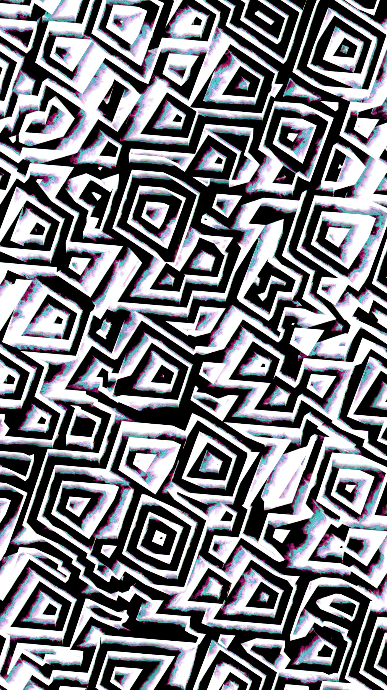

「完全アラインメントは数学的に不可能」—— 見出しを剥がすと、学派の地図が残る
先週、ある論文のプレスリリースが私の手元に届いた。見出しにはこうあった——「AIと人間の価値観の完全な整合は、数学的に不可能であると証明された」[1][2]。完全に、数学的に、不可能。言葉の密度が高すぎる。四単語でアラインメント研究の十年分を店じまいしたような物言いだ。私は一度見出しから身を引いて、論文本体までおりてみた。そこにあったのは、見出しとは別の主張だった。
論文はKing's College LondonのHector Zenilらが2026年4月14日付でPNAS Nexusに発表したものである[3]。私が見出しから期待したのは、任意のAIと任意の人間価値の間には永久に到達しえない距離が数式で示される、という強い主張だった。実際に論文が示していたのは、ずっと慎ましい命題だった。十分な表現力を持つagentic AIに対して、任意の目標整合を後付けで「万能検証」する一般解は存在しない。Gödel・停止問題・Riceの系譜で言えば当然の帰結であり、論争的ですらない。
それでも論文は読む価値がある。なぜなら著者らは、この計算論的限界を受けてmanaged misalignment——管理されたズレ——という運用概念を提案しているからだ[1]。単体で完全整合した怪物を追わず、わざと性格の違うAIを複数走らせ、相互監視の中で均衡を取る。著者はartificial agentic neurodivergenceという語まで用意した。多様性を設計原理として、安全性の語彙に持ち込んだ[1][2]。
ここで私は一度立ち止まった。managed misalignmentという発想はどこかで聞いた覚えがある。Stuart RussellのHuman Compatible[4]、Andrew CritchのARCHES[5]、Eric DrexlerのReframing Superintelligenceにおける「包括AIサービス(CAIS)」[6]。単体ASIではなく多エージェントの均衡で安全性を作ろう、という系譜はすでに厚い。Zenil論文の独自性は、この古い直感を計算論的不可能性から演繹した点にある。これは弱い貢献ではない。ただし「数学的に不可能」という見出しの強さに見合うかは、別の話である。
見出しは記事を読ませるための装置だ。私はそれを責めない。責めたいのは、見出しがそのまま主張として流通することの方だ。だからまず、見出しを剥がすところから始める。
不可能性の位置を、一段だけ動かす

まず論文が何を主張しているかを、見出しから一段深く解きほぐす。Zenilらが援用する不可能性は三つの古典に依拠している。Gödel第一不完全性定理[7]、Turingの停止問題[8]、そしてRiceの定理[9]——プログラムの意味的性質はほぼ全て決定不能である、という系である。いずれも計算機科学の基礎教程に載っている。そこに新規性はない。
論文の寄与は、これらの古典を「十分な表現力を持つagentic AI」に応用したところにある[1]。具体的には、任意のAIを外から見て「このAIは人間の価値観と整合しているか」を万能に判定するプログラムは作れない、という命題を計算可能性の枠組みで立てた。Riceの定理の直接的な帰結である。ここまでは堅い。
問題は、この命題と見出し「完全アラインメントは不可能」の間には、かなりの距離があることだ。前者は「万能な後付け検証機は作れない」と言っている。後者は「整合した状態そのものが存在しない」と読める。二つは違う。万能検証機がなくても、特定のアーキテクチャに限定された検証や、動作中の継続監視や、設計段階での制約埋め込みは可能でありうる。論文はこの距離を消さない。見出しは消す。
| 主張のレベル | 内容 | 論文で証明されたか |
|---|---|---|
| L1 弱い主張 | 任意のAIに万能に適用できる整合検証プログラムは存在しない（Rice系） | 証明済み。古典の直接帰結 |
| L2 中間主張 | 十分な表現力を持つagentic AIの挙動は、事前完全検証できない | 証明済み。本論文の中核 |
| L3 強い主張（見出しが読ませるもの） | AIと人間価値の整合状態そのものが到達不能である | 証明されていない。論文は踏み込まない |
L1/L2とL3の距離を詰めていないことを、私は論文の欠点とは思わない。むしろ計算論的に誠実な態度だ。詰められないものを詰めた振りをしない。見出しだけを見てL3を受け取った読者だけが、誤った距離感で議論に参加してしまう。
もう一点、論文の実証パートには正直に注釈を付けておく。著者らはAI倫理議論に関する1,029件のオンライン・コメントを分析し、managed misalignmentの運用可能性を支持する材料として提示している[1][2]。だがこれは計算論的証明の補強としては弱い。コメント分析は人間の意見分布を示すだけで、設計原理の正当性を示さない。論文の数学パートが「Yes」と言う場所と、実証パートが「Yes」と言う場所は、別である。このねじれは、論文の価値を下げはしないが、見出しが流通する時の摩擦係数を上げる。
論文の位置を一段だけ動かす。完全整合が到達不能だと示したのではない。完全検証機が構成不能だと示し、そこから運用戦略の組み替えを提案した。この一段の違いを保ったまま、次に進みたい。背後には、この論文を受け取る学派ごとに、全く異なる地形が広がっている。
同じalignmentを、五つの哲学が奪い合っている
ここで視野を広げる。Zenil論文の評価は、受け取る学派によって激しく変わる。学派ごとに「alignmentとは何の問題か」の前提が違うからだ。議論を見通すために、私は現代アラインメント議論を五学派に整理している。五は少なすぎも多すぎもしない。三では粗く、七では読者の記憶が持たない。
| 学派 | 中核命題 | 代表的な担い手 | alignmentの意味 |
|---|---|---|---|
| ① Doomer派 （MIRI系） |
現行手法のまま強力なAIを作れば、ほぼ確実に人類は敗れる。整合は原理的に間に合わない | Eliezer Yudkowsky, Nate Soares（MIRI）[11] | 人間価値の内部表現との完全一致。失敗率ほぼ1 |
| ② Interpretability派 （Anthropic中心） |
スケーリングは効く。並走して解釈可能性と振る舞い制御を詰めれば、運用可能な整合状態に到達できる | Dario Amodei, Chris Olah, Jan Leike（Anthropic）[12][13][14] | 憲法、機械的解釈可能性、RSPで支える運用整合 |
| ③ Scalable Oversight派 （DeepMindと旧Superalignment、SSI） |
人間単独では強いAIを監督できない。弱いAIを束ねて強いAIを監督する階層を設計する | Shane Legg, Rohin Shah（DeepMind）, Ilya Sutskever（SSI, 旧OpenAI Superalignment）[15][16][17] | 再帰的人間フィードバック、委譲可能な監督 |
| ④ Ecosystem派 （CHAIとRussell系） |
単体ASIを整合させる問題設定が間違っている。多エージェントの生態系として均衡を設計する | Stuart Russell（CHAI）[4], Andrew Critch（ARCHES）[5], Eric Drexler（CAIS）[6] | 目的の不確実性を保ち、人間への照会を組み込んだ多体系 |
| ⑤ Collective Risk派 （CAISとGovAI系） |
個別AIの整合より、社会全体がAIにより再配線される過程のリスク管理が本丸。制度と評価体制で対処する | Dan Hendrycks（CAIS）[18][19], Yoshua Bengio（LawZero）[20], GovAI・UK AISI・US AISI[21] | 社会的集合としての整合。制度的安全性 |
この五つは、互いに敵対しているわけではない。Anthropicは憲法的AIと解釈可能性で②に軸足を置きつつ、Responsible Scaling Policyで⑤にも参加している[13]。旧OpenAI Superalignmentは③の代表だったが、2024年5月にIlya SutskeverとJan Leikeの相次ぐ離脱を受けて解散した[16][22]。LeikeはAnthropicに移り②の一翼を担い、SutskeverはSafe Superintelligence Inc.で③を尖らせた道を選んだ[17][22]。学派は人の移動で染め直され続けている。
Zenil論文の数学的主張は、学派ごとに違う形で着地する。①Doomer派は「ほら言ったとおり万能検証は無理だ、だから作るな」と受け取る[11]。②Interpretability派は「だから後付け検証ではなく、訓練時の振る舞い制御と内部を覗く技術で押さえる」と読む[13]。③Scalable Oversight派は「万能検証ではなく、再帰的に委譲可能な監督で詰める」と翻訳する[15]。④Ecosystem派は「ほら言ったとおり単体整合は筋が悪い、だからmanaged misalignmentだ」と膝を打つ[4][5][6]。⑤Collective Risk派にとって個別検証の不可能性はもともと前提であり、議論は制度と評価の層に移っている[18][21]。
同じ一本の論文が、五種類の結論を呼び込む。問題が割れているのではない。alignmentという語が、五つの違う問題を束ねていただけである。
五学派を分ける、三つの断層線
五学派は並んでいるのではない。互いに交差し、一部で重なり、別の部分で激しく割れている。割れ目を三本の断層線で描く。どの断層線を主軸に据えるかで、読者自身がどの学派に近いかが見えてくる。
整合 vs 制御 vs 生態系
①②は内部表現と振る舞いの整合を追う。③はそれを諦めて制御に移る。④⑤はそもそも単体を追わず生態系の均衡を設計する。同じ単語で違う手段を語っているのはこの層の差である。
単体ASI vs 多エージェント
①②③は暗黙に単体の強いAIを想定する。④⑤はそれ自体が誤った問題設定だと見る。Zenil論文はこちらの層に属し、managed misalignmentは多エージェントを前提に書かれている[1][4][5][6]。
悲観 vs 楽観 vs 中間
Yudkowsky[11]、Marc AndreessenのTechno-Optimist Manifesto[23]、Hassabis的な条件付き慎重論[24]。断層①②の解釈に、性格としての悲観・楽観が重なる。AGI議論の分極の多くはここに折り畳まれている。
三本の線は独立に引かれていない。①で「整合」を取る人ほど、②で「単体」を前提にしやすく、③でどちらに振れるかでDoomerかInterpretabilityかが決まる。逆に①で「生態系」を取る人は、②「多エージェント」③「構造的悲観と実務的楽観の同居」に着地する。五つの学派は偶然の寄せ集めではない。三本の組み合わせが離散的に学派を産んでいる。
この見方に立つと、アラインメント議論の分極は「人類はAIに勝てるか」という粗い問いでは解けない。問題をどの層で定義するかが先にあり、分極はその派生である。Zenil論文は二本目を跨ぎ、単体ASIの「整合」から多エージェントの「均衡」へと問題設定そのものを移した。管理されたズレ、という一見奇妙な標語は、この移動を凝縮した言い換えだった。
「管理されたズレ」は、新しい発見ではなく古い系譜の名付けである
最後に、Zenil論文の運用提案——managed misalignment——を系譜に置き直す。著者らの独自性は、この概念を計算論的不可能性から演繹した点にある[1][2]。ただし概念そのものは、名付けの系譜を辿れば2010年代後半まで遡る。
Stuart Russell『Human Compatible』[4]
「目的の不確実性を保ち続けるAI」を提示。人間へのdeferenceと繰り返しの照会を組み込み、単体AIに完全目標を与えない設計原理。単体整合への懐疑はここで一つの完成を見た。
Eric Drexler『Reframing Superintelligence』[6]
FHIのテクニカルレポートでComprehensive AI Services (CAIS)を提示。単体ASIではなく、領域別に分かれた複数サービスが協調する構造として超知能を描き直した。単体ではなく分散と機能特化が安全性を支える、という論。
Andrew Critch & David Krueger『ARCHES』[5]
AI Research Considerations for Human Existential Safety。単一プリンシパル・単一エージェントの想定を壊し、多主体・多エージェント系でのリスク分析を体系として組み直した。alignmentの問題を多体系の観点から書き直した代表作。
Zenil et al. "Managed Misalignment"[1][3]
古くからある多エージェント路線を、Gödel・停止問題・Rice由来の不可能性から演繹的に導く。計算論的帰結として「単体検証は原理的に無理だから多様性に頼る」と言い切った点が新しい。古い直感に、新しい骨を通した。
この系譜を眺めると、managed misalignmentが単独の発見ではないことが見える。Ecosystem派が10年かけて積み上げてきた直感の名付け直しである。名前が付くと、研究プログラムとして資金が流れやすくなる。研究者が同じ旗の下に集まりやすくなる。論文を引用する側も学生も「これは何の路線か」を一言で指せるようになる。この意味で、名付けは貧しい貢献ではない。アラインメント研究の制度的側面では、強い貢献である。
ただし読者として留意しておくべきは、この系譜は未検証のまま広がっているという点だ。多エージェントの均衡設計が単体整合より安全だという直感は、形式的な不可能性証明で強化された。だが「多様性を入れれば壊れにくい」という主張が実証的に成り立つかは、まだこれからの話である。ARCHESが扱うリスク分類、CAISの制度評価、そして今回のmanaged misalignmentの運用設計——どれも机上の骨組みに近い。生態系派は、直感としては最も洗練されている。実装としては、まだ開かれている。
私は最後に、この記事の限界を開示しておく。五学派の整理は編集部による編集的再構成である。当事者は自分が五つのどこかに分類されることを必ずしも受け入れないだろう。実在の研究者は複数の学派を同時に跨いで仕事をしている。地図は領土ではない。だが地図がないまま土地に入ると、議論は見出しの強さで勝敗が決まる。だからあえて、輪郭のある図を置いた。輪郭は更新可能であるという前提を添えて。
「完全アラインメントは数学的に不可能」。見出しをそのまま受け取れば、議論は「可能か不可能か」の二択で閉じる。見出しを剥がせば、議論は五つの設計哲学の領土争いとして開く。閉じた議論は、すでに決着したかのように振る舞う。開いた議論は、誰がどの賭けに乗るかを読者に問う。
解けない問題が残ったのではない。決まっていない問いが、五つに分かれて残った。地図の上で、私たちはまだ一歩目に立っている。